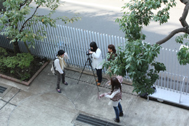
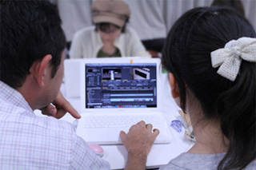

領域・授業概要＞ プロジェクト＆コラボレーション演習

プロジェクト＆コラボレーション演習
企業・団体等と連携しプロジェクトを行う選択制の演習授業で、その年々のニーズに合わせプロジェクト内容を決定します。2015年度は8つのプロジェクトを立ち上げました。ここでは一部のプロジェクトの様子をご紹介します。①さがまちバンバンプロジェクト
コラボレーションパートナー：公益社団法人相模原・町田大学地域コンソーシアム
このプロジェクトでは、学生目線で、学生自らが取材・制作するJ:COMチャンネルの地域情報番組「さがまちバンバン」で放映する番組の制作を行いました。
番組長：10分（本編実尺は8分）
放送局：J:COMチャンネル（11ch）（相模腹・大和エリア・町田・川崎エリア（視聴可能世帯：約20万世帯））
②水族コンテンツ制作プロジェクト
コラボレーションパートナー：独立行政法人 水産総合研究センター
子どもや女性を対象に、水中に住む生物（水族）の世界を深く知って貰うことを目的に、魚や海洋生物をテーマにビジュアル表現をするプロジェクト。専門家からアドバイスを受け、サイエンスの視点から水族を理解した上で制作を行いました。
③ICTを活用した防災教育コンテンツの開発プロジェクト
コラボレーションパートナー：杉並区立こども発達センター、東京女子大学、（株）キャドセンター、東京臨海広域防災公園
先の大震災では、被災地の障がいのある子どもたちが、避難所など日常と異なる環境への適応が難しく、健常者以上に苦痛な生活を強いられるといった厳しい現実がありました。このプロジェクトでは、今後の災害に備え、タブレットやウェアラブル端末を利用して、「発達障がい」や「知的障がい」の子どもの防災に対する備えた心のケア、そしていざという時、緊急時の位置情報連絡や避難指示など子どもを守るアプリの開発を行いました。
④デジタル絵本プロジェクト
コラボレーションパートナー：ドットDNP&CANVAS
子ども向け（未就学児〜低中学年の子どもが楽しめる教育的またはエンターテイメント的）デジタルコンテンツを制作、イベント等で実証実験ののちiOS・Androidアプリとしてリリースしました。
⑤長野県高山村プロジェクト
コラボレーションパートナー：長野県高山村、須高ケーブルテレビ（株）
女子美術大学と長野県高山村、須高ケーブルテレビ（株）との産学官連携プロジェクトで、2015年に10周年を迎えました。毎年、プロジェクト内容を変更し行っており、本年度は「高山村の果物（りんご、ぶどう、もも、さくらんぼ等）を使用した加工品の企画、ブランディングとパッケージデザイン」、「女子美ワインのラベルと手提げ袋のデザイン」を授業期間を終えた現在も継続して行っています。

撮影風景
撮影風景

編集風景
編集風景